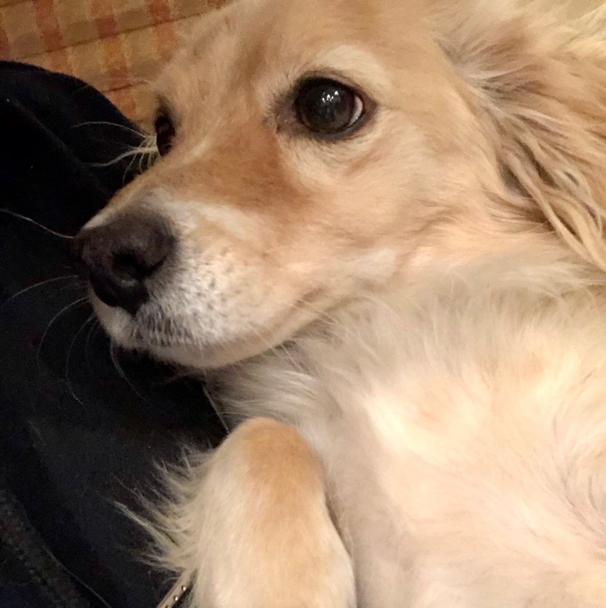
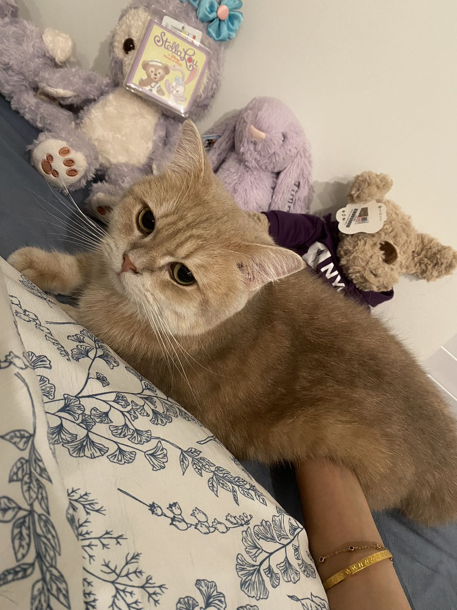

Slu
The name of the dog comes from the city where he's adopted, St. Luis. He was extremely scared of everything when he first arrived but after he is used to the new environment, that situation becomes a lot better.
He really like to run on the grass and actually eating the grass. He likes to follow when we go for a walk instead of walking in the front to lead.
Photo Gallery
Likes
- Eat grass
- Running on the grass
- Licking
Cody

Cody is a 7yr old Pembroke Corgi. He was born in Cavalier Farms, Seattle. He prefers to spend his days lounging on the bean bag. Every day, he enjoys two walks around the neighborhood and likes to make friends with other doggie friends. If lucky enough, he might see the cyclist, but he is not allowed to give chase.
Cody loves traveling. He enjoys walking on the beach and taking sun naps. But he hates cold weather. He would like to stay at home lounging by the fireplace in winter.
Photo Gallery


Likes
- Traveling
- Lounging
- Tennis balls
Jinjiao
Jinbao, a one-and-a-half-year-old cat, has a penchant for playtime with both humans and stuffed toys. He eagerly emerges to greet his owner every day upon her return home. Jinbao shares his home with a brother named Tietie, and together, they exude boundless energy, engaging in playful interactions with each other.
Photo Gallery
Likes
- Play with lazers
- Sleep
- Jump on the couch
Tietie
Tietie is a two-and-a-half-year-old Ragdoll cat with long, white fur. He has a fondness for snacks, which has contributed to his rapid growth. He possesses a gentle and playful nature, enjoying interaction with people. However, he can also be a bit mischievous, as he often wakes his owner up every morning with his calls.
Photo Gallery
Likes
- Mess around with stuff
- Run around
- Eat
Fitz

Loves chasings tennis balls, chipmunks, squirrels, and birds. Often found sitting by the fire in wintertime, and in sun patches when available. He's energetic, mischievous, and easily bored. He loves people and gets grumpy if left without a lap too long.
Loves barking up trees, running around on the lawn, and digging in the dirt looking for moles. He especially likes getting treats and whines when he comes inside and doesn't get a snack.
Photo Gallery


Likes
- Blankets
- Being warm
- Barking